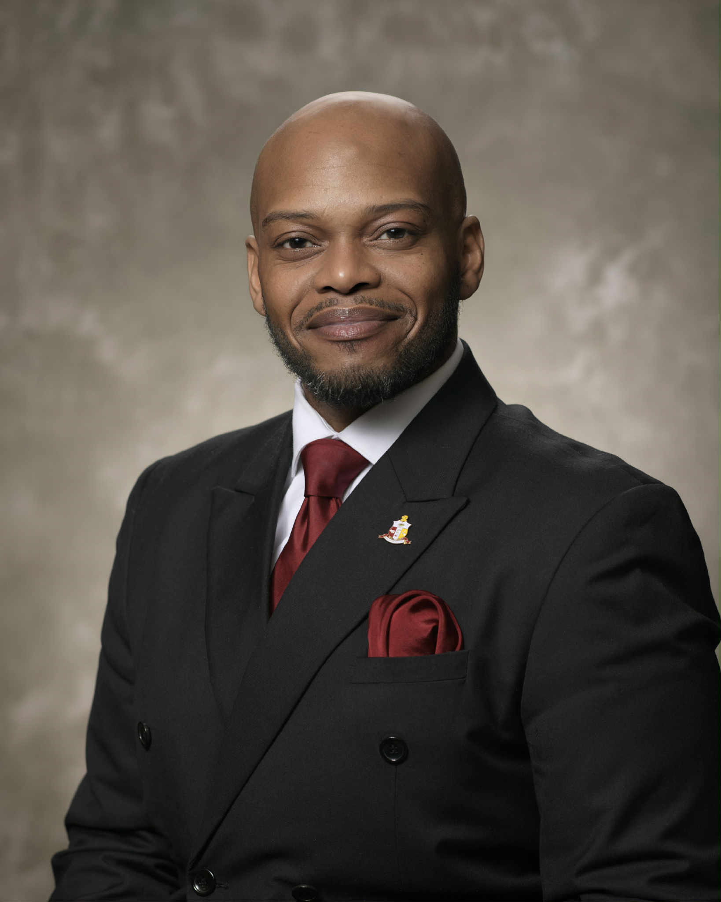

Biography
Davion Williams was born in Danville, Illinois, to Sabrina Brown and Shawn Jones. At the age of six, he relocated to the Champaign-Urbana area with his mother and brother, where he was raised and educated within both the Urbana and Champaign school districts.
A graduate of Urbana High School, Davion went on to earn a Bachelor of Music Performance from Central State University, a Historically Black College and University, in 2011. He later received a Master of Music in Performance and Literature from the University of Illinois Urbana-Champaign in 2018.
Davion is an active member of Mt. Calvary Missionary Baptist Church, where he serves as the Director of Music and Media. Through his church and community service, he has contributed to several impactful outreach efforts, including Dare to Care, Stone Creek’s Big Give, and service as a conductor for the MLK Celebration Community Choir.
Outside of his professional and ministry work, Davion enjoys writing and arranging music, cooking, baking, and spending quality time with his family, including his daughter, Azaryah, and her mother, Sherricka. He is also a proud member of the Champaign-Urbana Alumni Chapter of Kappa Alpha Psi Fraternity, Inc., initiated in Spring 2015.
